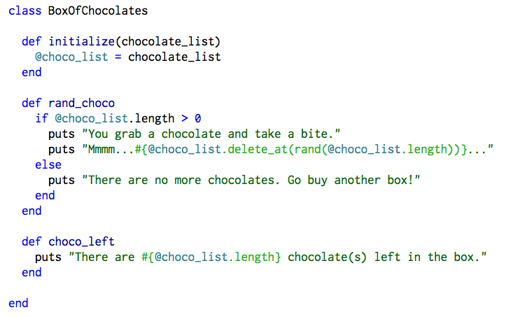
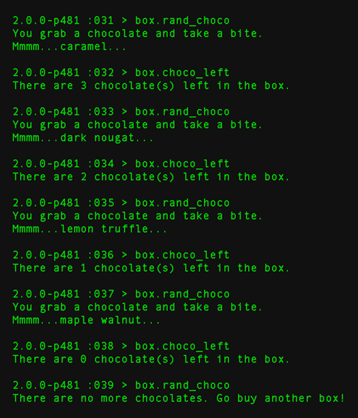

Time for Class!
This week I got a lot of practice creating and using classes in Ruby. I had a lot of fun doing it, and can't wait to build more complicated classes next week. A class is a bit of code that can let us create multiple instances or objects from that class. The example I'll share here is a simple class I wrote called BoxOfChocolates. The code in BoxOfChocolates lets me create as many different kinds of chocolate boxes as I want. Here's the code:
 A nice thing about classes is that you can use instance variables. @choco_list is an example of an instance variable. Normally, a variable declared within a method can't be accessed outside of that method. An instance variable can be called anywhere within a class. Notice that I call @choco_list in 3 different methods within the class. I create the variable in the initialize method, then in rand_choco and choco_left, I call that same variable from the initialize method.Let's see it in action! To create a new box of chocolate, I might type this on my command line in irb:
box = BoxOfChocolates.new["lemon truffle","dark nougat","caramel","maple walnut"]
Now that I have my box, I can start taking chocolates out of it by calling the rand_choco method inside the class. This method will randomly return one of the chocolates in the box. Like Forrest Gump, you never know what you're going to get. Here's what happens when I take a chocolate and then check how many are left:
Oh no, I'm out of chocolates! Fortunately I can throw away this box and make a new one. This time I'll fill it with more chocolates so I won't run out anytime soon:
bigger_box = BoxOfChocolates.new["lemon truffle","dark nougat","caramel","maple walnut","marzipan","strawberry cream","divinity","raspberry truffle","dark peanut","dark coconut","dark almond","milk buttercream"]
I've got a new box, and with 12 chocolates instead of 4! I'm going to go enjoy these and share them with my friends and family. If you want some, try making your own BoxOfChocolates class. Until next time!